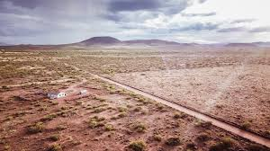
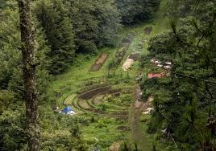
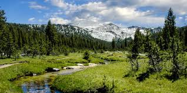

Land Type
There is many different types of land you can want or end up setting up your off grid home in. There is many upsides and downsides that come with each land type.
Desert
The How: You focus on Thermal Mass and Water Storage. You build with thick walls (Adobe or Earth Bag) to soak up the sun’s heat and release it slowly at night. You must install high-capacity cisterns and diverters for rare but heavy rains.
Upside: 100% reliable Solar Power. You almost never need a backup generator, and the dry air makes Evaporative Cooling highly effective for very little power.
Downside: Scarcity of water. If your well fails or it doesn't rain, you are in a life-threatening situation. The intense UV also destroys plastic and rubber components on your gear twice as fast.

Forest
The How: You build to keep the house off the damp ground. You focus on Airflow to prevent rot and use woodstoves as the primary heat source since fuel is literally falling from the trees.
Upside: Unlimited fuel and protection. The trees act as a natural windbreak and provide total privacy. You also have easier access to "Surface Water" like springs or creeks.
The solar issue. You have to clear a massive amount of trees or build expensive solar towers to get above the canopy. You also face a high risk of Wildfires and falling limbs crushing your roof.

Meadows
The How: You focus on Wind Loading and Foundation Stability. Since the ground is often expansive clay, you need a reinforced slab or deep footings. You use a hybrid Solar/Wind energy system since there are no obstructions.
Lowest cost of entry. There are no trees to clear and no hills to dig into. You have perfect 360-degree exposure for solar and wind power generation.
Zero protection. Your house is exposed to the full force of storms and the sun. Without trees for shade, your cooling bills spike in the summer
